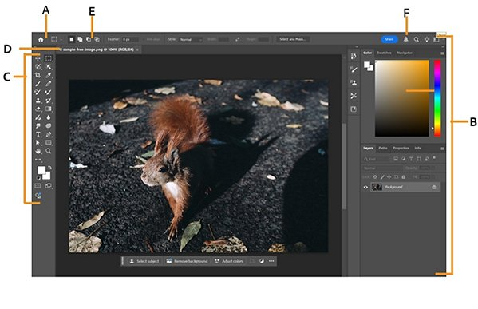
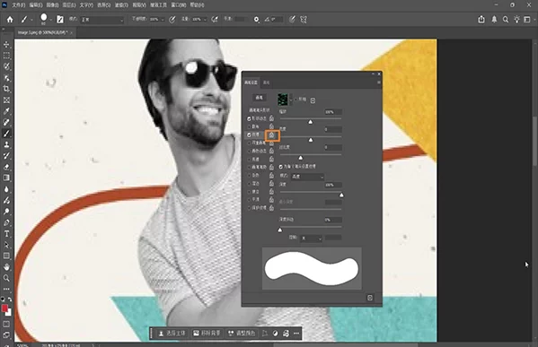

第一次打开 PSCC：新手五分钟能用起来的指南
从零接触 Photoshop CC，这篇带你走过安装、界面认知、第一次修图和导出的完整路径，不用任何基础就能上手。
这篇能带你从完全不懂到用起来——不需要任何修图基础，跟着做就行。如果想先看看 PSCC 到底是什么，官网上有详细介绍。
它到底是干嘛的
把 PSCC 想象成一个超级工具箱，每个工具对应一种具体的活：要擦掉照片里的电线，拿修复画笔；想换个天空颜色，用渐变工具；做完了要发给朋友，一键快速导出就行。它不是那种"打开就懵"的软件——界面上的每一块区域、每一个按钮，都是为了让你完成某件事而存在的。
五分钟上手：从下载到第一次操作
第一步：下载安装
安装包从官方下载获取，一路点下一步就行，没什么坑。装完后桌面上会有一个蓝色的眼睛图标，双击打开。
第二步：新建一个画布
打开后你会看到一个欢迎界面，点左上角的"新建"按钮。弹出来的对话框里，预设选"照片"→"横向"就行，分辨率保持默认 72。点"创建"，一块空白画布就出现在你面前了。
第三步：认识一下界面
整个界面分成四块：
- 最上面一条是应用栏，放着文件、编辑、图像这些菜单；
- 左边竖着一条是工具栏，每个小图标是一个工具，鼠标悬停能看到名字和快捷键；
- 中间最大的区域是画布，你的照片就放在这里；
- 右边两列是各种面板，图层、属性、历史记录都在这里。
如果你不小心把某个面板关了，从顶部"窗口"菜单里重新勾选就能调出来。

第四步：第一次画两笔
按快捷键 B 选中画笔工具，选一个颜色（右边面板的色板里点一下），在画布上拖动鼠标——你会看到线条出来了。想撤销？Ctrl + Z 按一下就回去了。就这么简单。
第五步：保存
Ctrl + S，弹出来的对话框里选个位置，文件名随便起，格式选 PSD（这是 PS 的源文件格式，以后还能改）。点保存，搞定。
上手后先玩这三个功能
五分钟能跑通基本流程后，别急着啃一堆教程——先把这三个功能摸熟，够用了。
修复画笔：擦掉你不想要的东西
比如你拍了一张街景，照片里突然闯进一个陌生人。选中修复画笔（快捷键 J，长按可以在污点修复和修复画笔之间切换），把笔刷大小调到和陌生人头差不多大，然后在他身上涂抹。
你会看到涂抹过的地方自动被周围的纹理和颜色替换掉，就像那个人从来没存在过一样。这就是 PS 最神奇的"内容识别"能力——它会分析周围像素，智能匹配出最自然的修复效果。
污点修复更简单，连取样点都不用，直接在瑕疵上点一下就好。适合处理小的瑕疵、痘痘、传感器灰尘这些东西。

渐变工具：一秒换个背景色
想把一张白底照片换成蓝色渐变背景？选中渐变工具（快捷键 G，长按可以切换油漆桶），在画布上从上往下拖一条直线——松开鼠标，颜色就沿着这条线平滑过渡了。
默认是线性渐变，你还可以在选项栏切换成径向（从中心向外扩散）、角度（绕一圈的扇形）、菱形等五种类型。点一下渐变缩略图可以打开编辑器，自己调配多色渐变，比如从浅蓝到深蓝再到紫。
按住 Shift 拖动的话，会强制渐变方向为 0°、45°、90° 这些标准角度，不会歪。
快速导出：Ctrl + Alt + W 一键完事
做完图要发给客户？别每次都去"文件→导出→导出为"调参数。先配置一次快速导出：打开"文件→导出→导出首选项"，默认格式选 JPG，质量拉到 85 左右（够用又不占空间），输出位置勾选"导出到当前文档旁的文件夹"。
以后每次导出，按一下 Ctrl + Alt + W，PS 自动把当前文件导出成预设好的格式，丢到同目录的 assets 文件夹里。整个过程不用弹任何对话框，一秒完成。这些工具的进阶玩法和参数细节，在PSCC文档里都有详细收录。
小白的三个常见疑问
保存后找不到文件怎么办
PS 默认把文件保存到你上次保存的位置。如果实在忘了，Ctrl + O 打开文件选择框，看左侧"最近使用的项目"里有没有你刚才保存的文件。找不到的话，打开 Windows 的文件资源管理器，右上角搜索你起的文件名。
画布缩太小看不清细节
左手按 Alt 键，右手滚轮往上滚，就能放大画布。按住空格拖动鼠标可以平移画布。想回到 100% 实际大小，双击左边工具栏底部的放大镜图标就行。这些导航操作在你修图时会高频使用，记一下快捷键省很多事。
面板被我拖乱了怎么恢复
顶部应用栏有个工作区下拉菜单（默认显示"基本功能"或"摄影"之类的），点一下，菜单最底部有"重置面板位置"，点一下，所有面板就回到默认布局了。如果你自己调好了一套顺手的布局，也可以在这个菜单里选"新建工作区"保存下来，以后随时切换回来。
最后
你现在已经能用 PSCC 完成最基础的修图工作了——擦掉照片上的杂物、换个背景颜色、导出成品。不用急着学高级功能，先把这三个工具用起来，遇到具体问题再来翻文档查参数。等你能熟练处理日常修图需求的时候，再去探索图层、蒙版、调整图层这些进阶概念也不迟。